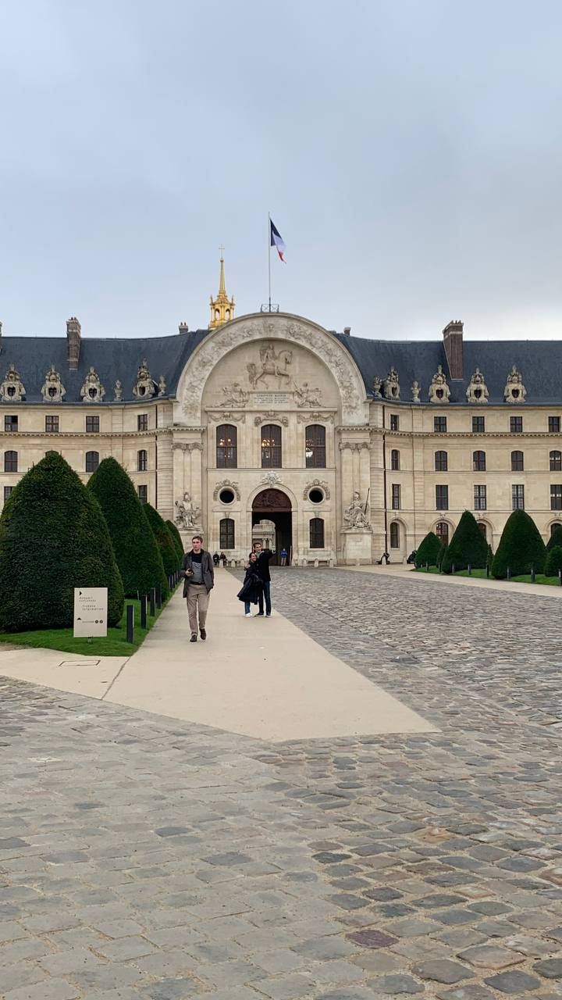
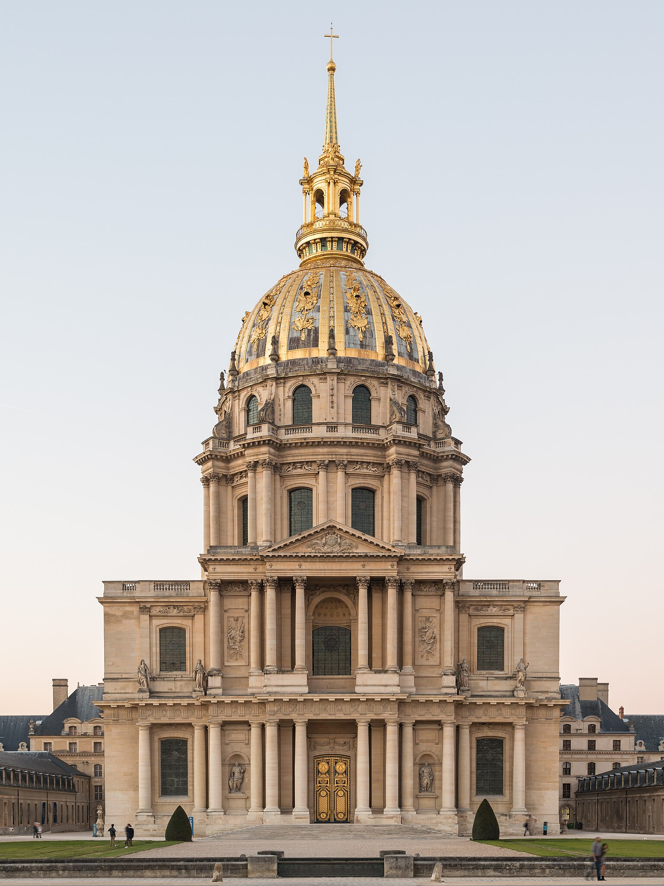
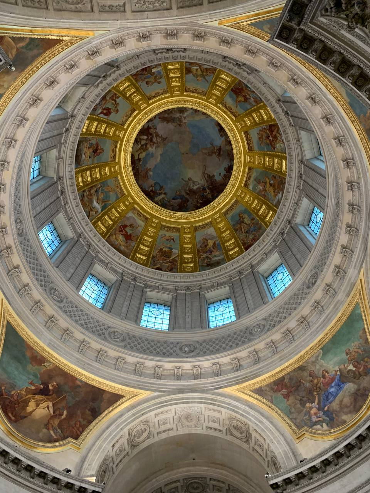
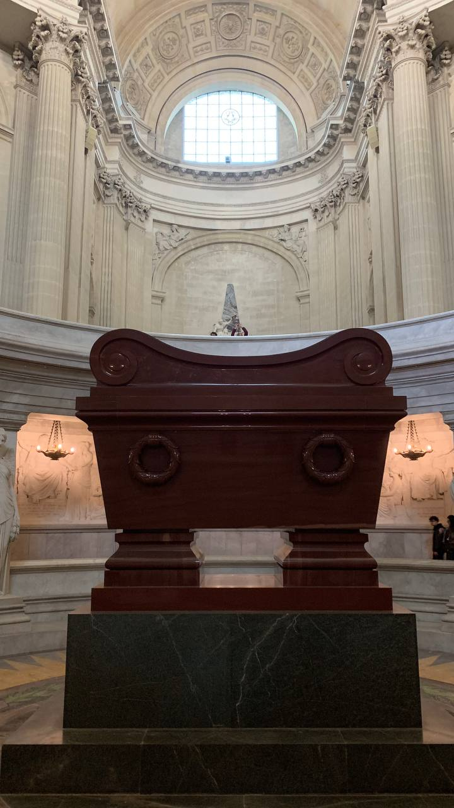
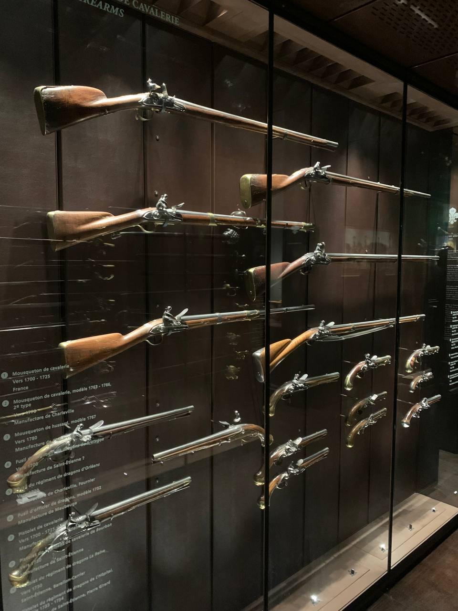
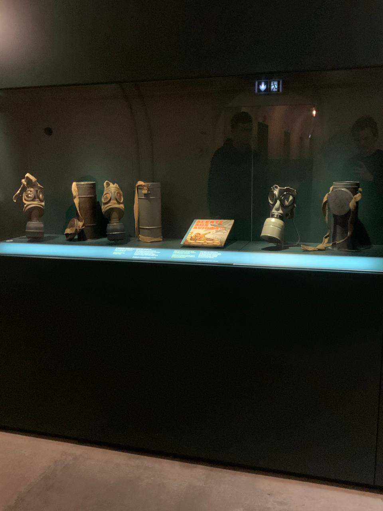
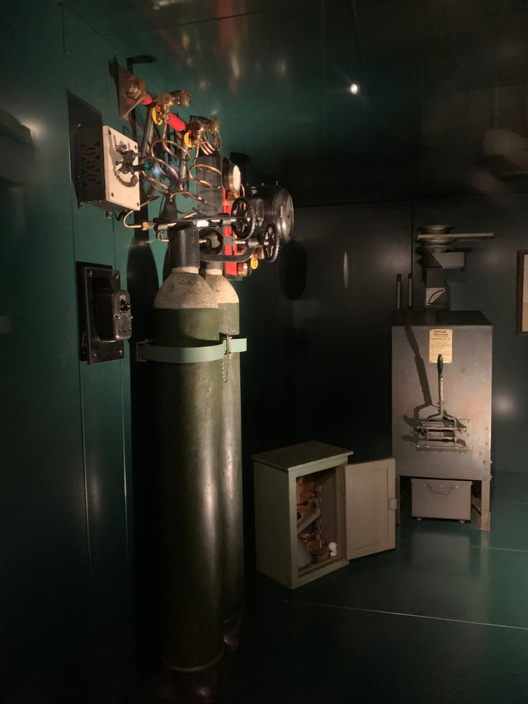
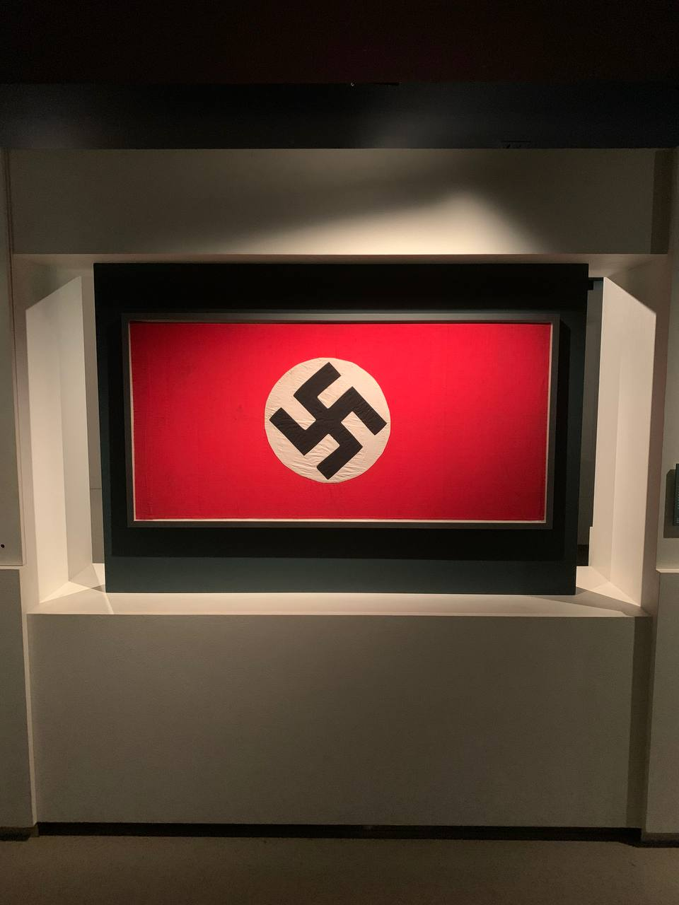

Invalides, Napoleon and Liberation
A journey through history, memory and military art
Monument Details
Discover the historical and artistic richness of our places
Les Invalides
Hôtel des Invalides




History and Significance
Les Invalides represents one of the most significant architectural complexes in Paris. Built at the behest of Louis XIV in 1670, this majestic building was born from the need to provide assistance to French war veterans. The imposing architecture, characterized by the famous golden dome, embodies the grandeur of the Sun King and French military power.
The complex extends over a vast area with a 196-meter façade and includes 15 courtyards, the original hospital, the Musée de l'Armée, Napoleon's tomb and the church of Saint-Louis-des-Invalides. Each architectural element tells a story of power, art and collective memory.
Historical Curiosities
The Golden Dome
Contains 12.65 kg of pure gold leaf, applied in 550,000 ultra-thin sheets (0.2 microns thick)
Original Capacity
Could accommodate up to 4,000 war veterans simultaneously
Construction Time
Completed in just 6 years, a record for the time
Napoleon's Tomb
Dôme des Invalides




The Emperor's Mausoleum
Napoleon Bonaparte's tomb represents one of the masterpieces of world funerary architecture. Designed by Louis Visconti, this monumental work of art houses the Emperor's remains in a massive red quartzite sarcophagus, positioned at the center of a circular crypt of extraordinary beauty.
The architectural design reflects Napoleon's greatness and ambition, with a structure that evokes both imperial majesty and technical innovation. The crypt, accessible through a monumental staircase, creates an atmosphere of sacredness and respect that honors the memory of one of the most influential figures in European history.
Technical Details
Dimensions
4 meters long, 2 meters wide
Material
Red Shoksha quartzite from Russian Karelia
Nested Coffins
Six coffins: tin, mahogany, lead, mahogany, ebony, and quartzite
Musée de l'Armée
National Army Museum



An Extraordinary Collection
The Musée de l'Armée houses one of the richest and most complete military collections in the world, with over 500,000 objects that tell the evolution of the art of war from the Middle Ages to the present day. The collection includes medieval armor, historical firearms, uniforms, flags, documents and military works of art of inestimable value.
The museum is organized into thematic sections that allow visitors to explore different historical periods and aspects of military life. From the armor of medieval knights to the uniforms of the Great War, each object tells a story of courage, innovation and sacrifice.
Unique Pieces
Francis I's Armor
Complete armor of the 16th century King of France
Napoleon's Horse
Vizir, the Emperor's favorite horse
Historical Flags
Over 1,000 historical flags and banners
Musée de la Libération
Leclerc & Moulin




Stories of Courage and Freedom
The Musée de la Libération is dedicated to the memory of General Philippe Leclerc de Hauteclocque and Jean Moulin, two emblematic figures of the French Resistance. The museum tells their extraordinary stories through original documents, photographs, personal objects and testimonies that allow visitors to relive one of the most dramatic and glorious periods in French history.
The permanent exhibition explores not only the military and political deeds of these two heroes, but also the social and cultural context of the time, offering a complete vision of France during the Nazi occupation and the struggle for liberation.
Emotional Journey
Jean Moulin and the Resistance
Prefect who unified the French Resistance and became the first chairman of the National Council of the Resistance (May 1943). Arrested by the Gestapo at Caluire, he died under torture in July 1943. His ashes rest at the Panthéon in Paris.
Leclerc's Artifacts
Walking cane, Moroccan burnous, and British identity papers
Original Documents
Authentic letters and telegrams
Our Itinerary
Detailed program for the fourth day
Departure — B&B HOTEL
4 Rue Emile Reynaud, 75019 Paris
Metro to Les Invalides
Line 8, 13 - Invalides Station
Transfer
To the Musée de la Libération
Return to hotel
Metro transfer
Practical Information
Musée de l'Armée & Les Invalides
Includes Napoleon's Tomb129 Rue de Grenelle, 75007
Line 8, 13 (Invalides)
€17 • €12 reduced • Free <18
Daily 10:00 - 18:00
Musée de la Libération
Free Admission4 Avenue du Colonel Henri Rol-Tanguy, 75014
Line 4, 6 (Denfert-Rochereau)
Free for everyone
Tue - Sun 10:00 - 18:00